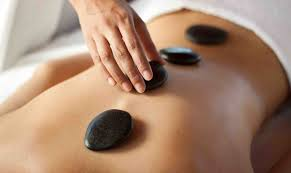

About
Many people in life find purpose in serving others. At Primal Touch, we have been serving others by providing excellent service for over 20 years. Our licensed staff is certified in many different forms of body care to help you live a more healthy lifestyle free of stress.
Contact
Location
Offerings
Hot Stone Massage
Hot stone massage is a specialty massage where the therapist uses smooth, heated stones as an extension of their own hands, or by placing them on the body. The heat can be both deeply relaxing and help warm up tight muscles so the therapist can work more deeply, more quickly.
Deep Tissue
Deep tissue massage therapy is similar to Swedish massage, but the deeper pressure is beneficial in releasing chronic muscle tension. The focus is on the deepest layers of muscle tissue, tendons and fascia (the protective layer surrounding muscles, bones and joints).
Swedish Message
Swedish massage uses five styles of strokes. The five basic strokes are effleurage (sliding or gliding), petrissage (kneading), tapotement (rhythmic tapping), friction (cross fiber or with the fibers) and vibration/shaking. Swedish massage has shown to be helpful in reducing pain, joint stiffness, and improving function in patients with osteoarthritis of the knee over a period of eight weeks
Rain Drop Therapy
Raindrop technique is a powerful technique using essential oils that was developed by D. Gary Young in the 1980s. It combines several holistic modalities to bring balance and alignment to the body in a non-invasive manner. It also stimulates all the body systems on a physical and emotionally level.
Shiatsu
Shiatsu is a form of Japanese bodywork based on the theoretical framework of traditional Chinese medicine. In the Japanese language, shiatsu means "finger pressure". Shiatsu techniques include massages with fingers, thumbs, and palms; assisted stretching; andjoint manipulation and mobilization. To examine a patient, a shiatsu practitioner uses palpation and, sometimes, pulse diagnosis.